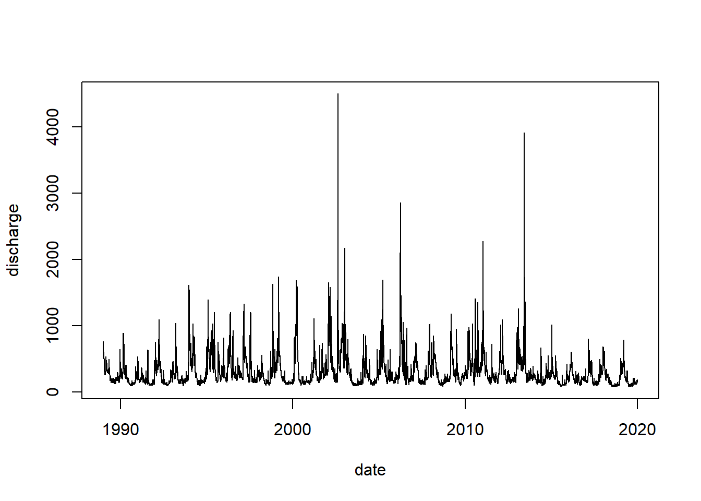
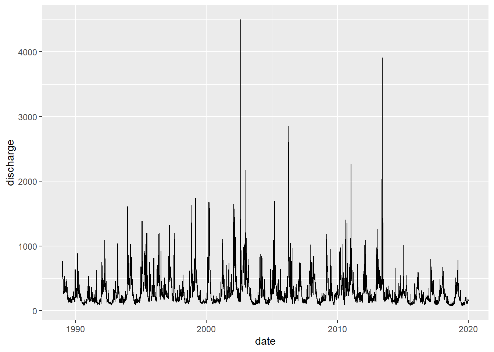
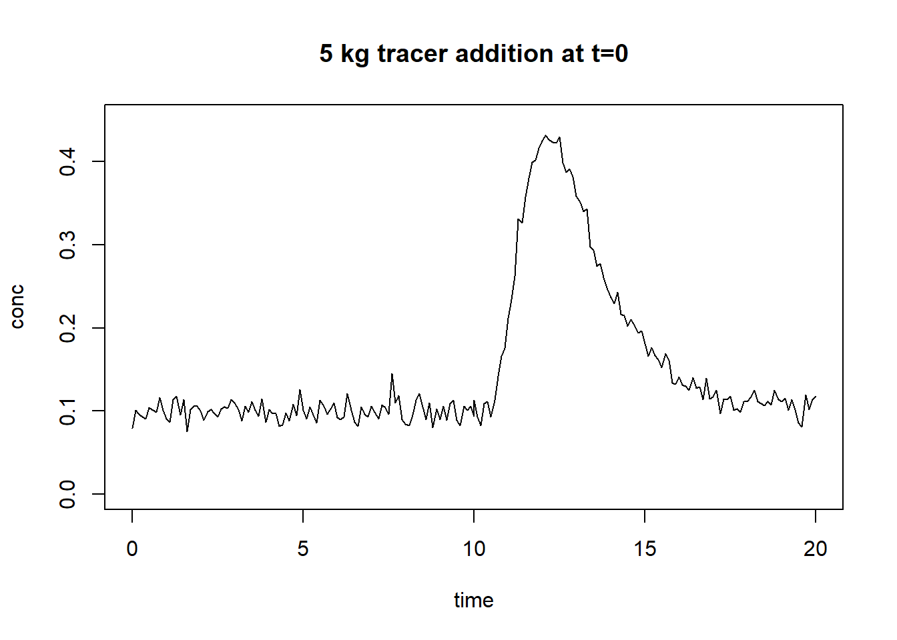
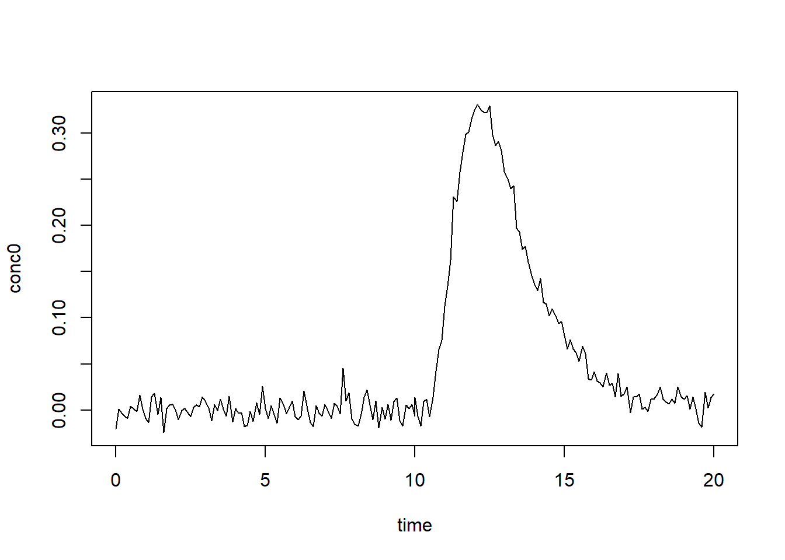

library(readr) # modernized functions to read rectangular data like csv
library(dplyr) # the most essential tidyverse packages
library(tidyr) # contains for example pivot tables
library(lubridate) # a tidyverse package for dates
library(ggplot2) # high level plotting with the grammar of graphicsHydrologie und Wasserbau Uebung4 - Abfluss
Einführung
In der ersten Aufgabe werden Sie die Hydrologie der Elbe charakterisieren. Die Schritte umfassen zunächst das Importieren der Daten in R und dann die Visualisierung der Daten. Anschließend berechnen Sie aussagekräftige statistische Kenngrößen, einschließlich NNQ, NQ, MNQ, MQ, MHQ, HQ und HHQ.
In der zweiten Aufgabe werden Sie den Abfluss in einem Bach anhand einer Tracermessung berechnen.
Die Übungen erfordern Ihre R-Kenntnisse, und Sie werden wahrscheinlich mit der Syntax Schwierigkeiten haben. Verwenden Sie das Spickzettel, fragen Sie mich um Hilfe oder stellen Sie ChatGPT gezielte Fragen, falls Sie nicht weiterkommen, zum Beispiel: „Ich versuche, Daten in R einzulesen. Warum funktioniert dieser Code nicht: <Code hier angeben>?”
Diese Übung basiert auf einer ähnlichen Übung von Thomas Petzoldt (TU-Dresden, https://github.com/tpetzoldt). Die ursprüngliche Übung finden Sie hier: https://tpetzoldt.github.io/element-labs/qmd/03-discharge-elbe.html. Diese Arbeit wird dankend anerkannt.
Der Datensatz
Der Datensatz besteht aus täglichen Messungen des Abflusses der Elbe in Dresden (tägliche Abflusssumme in \(\mathrm{m^3 s^{-1}}\)). Die Daten wurden freundlicherweise vom deutschen Bundesanstalt für Gewässerkunde (BfG) zur Verfügung gestellt. Bitte lesen Sie die Informationsdatei elbe_info.txt über die Datenquelle und das Copyright, bevor Sie die Datei data.csv herunterladen. Der Datensatz ist dann im Kursordner auf ILIAS oder verfügbar unter https://github.com/tpetzoldt/datasets/blob/main/data/.)
Packages
Sind alle nötigen Packages installiert, müssen sie einmal in jedem neuen R-Session geladen werden.
Aufgabe 1: Elbe
In dieser Übung werden Sie Abflussdaten der Elbe in R einlesen, die Daten visualisieren und die wichtigen statistischen Kenngrößen NNQ, NQ, MNQ, MQ, MHQ, HQ und HHQ berechnen.
| Bezeichnung | Erklaerung |
|---|---|
| NNQ | Niedrigste Niedrigwasserabfluss seit Beobachtungsbeginn |
| NQ | Niedrigwasserabfluss. Niedrigster Wert einer Jahresreihe |
| MNQ | Mittelwert des NQ |
| MQ | Mittlere Abfluss. Arithmetische Mittel aller Beobachtungen |
| MHQ | Mittlerer Hochwasserabfluss. Mittelwert des HQ |
| HQ | Hochwasserabfluss. Oberer Wert einer Jahresreihe |
| HHQ | Hoechster Hochwasserabfluss. Oberster bislang beobachteter Wert |
A) Daten einlesen
Bevor Sie die Elbeabflussdaten elbe.csv einlesen, schauen Sie sich die Daten erst mit einem Texteditor an. Gibt es Header? Sind die Spaltenüberschriften in Ordnung oder enthalten sie Sonder- oder Leerzeichen? Welche Formate haben die Daten?
Prüfen Sie auch Ihren Arbeitsverzeichnis mit dem Befehl getwd(). Wo ist elbe.csv relativ zum Arbeitsverzeichnis gespeichert?
Sieht alles okay aus, verwenden Sie die Funktion read.csv() im base R Package, oder alternativ dazu die Funktion read_csv() im Package readr, um die Daten einzulesen. Als Argument in den Klammern müssen Sie den Pfad zu der Datei - relativ zu Ihrem Arbeitsverzeichnis - in Anfürhungszeichen angeben. Zum Beispiel, read_csv("../Daten/elbe.csv") bedeutet, gehe eine Ebene höher als mein Arbeitsverzeichnis, dann gehe in den Verzeichnis “Daten”, dann lese “elbe.csv”.
Geben Sie mit dem Zuweisungsoperator den eingelesenen Daten einen Namen (z.B. “elbe”) elbe <- read_csv(). Wenn Sie read_csv() verwenden, muss das Paket readr erst einmal geladen werden mit library(readr). Der Vorteil von read_csv() ist, dass Datumsangaben automatisch erkannt werden.
Wenn Sie Schwierigkeiten haben, die Daten einzulesen, können Sie natürlich die Daten manuell einlesen, und zwar in RStudio über dem Menüpunkt “File/Datei” –> “Import dataset”.
B) Visualisieren Sie die Daten
Schauen Sie sich die Daten in R an. Nutzen Sie Funktionen wie View(elbe), head(elbe), tail(elbe), str(elbe), oder klicken Sie auf elbe in Ihrem Environment im Panel oben rechts in RStudio.
Welche class haben die einzelnen Spalten? Passt das zu den Daten? Wenn die erste Spalte die class “character” hat, muss sie in ein Datum konvertiert werden. Sie können das mit der Funktion as.POSIXct() im Base-R-Package, oder beispielsweise mit der Funktion as_date() im Package lubridate, die zuerst mit library(lubridate) geladen werden müsste.
Plotten Sie die Daten, mit Zeit auf der x-Achse und Abfluss auf der y-Achse. Nutzen Sie entweder die Base-R-Funktion plot() oder die Funktion ggplot() aus dem Package ggplot2, der zuerst geladen werden müsste. Für plot() würde der Syntax ungefähr so aussehen:
plot(YSPALTE ~ XSPALTE, data = elbe, type = "l")Für ggplotgibt es ein getrennter Cheat-Sheet im Projektordner auf ILIAS, und die Funktion würde ungefähr so aussehen:
ggplot(data = elbe) +
geom_line(aes(x = XSPALTE, y = YSPALTE))Können Sie schon visuell NNQ, NQ, MNQ, MQ, MHQ, HQ and HHQ abschätzen?
Mit Base-R:

Mit ggplot:

C) Berechnen Sie NNQ, MQ, und HHQ
Die Kenngrößen, die sich aus der ganzen Zeitreihe ableiten, lassen sich relativ einfach berechnen. Hierzu benutzen Sie Funktionen wie min(), max(), mean() oder summary(). Als Argument (das was innerhalb der Klammern kommt) geben Sie den Abfluss an
Min. 1st Qu. Median Mean 3rd Qu. Max.
74.2 154.0 224.0 302.0 360.0 4500.0 Bonusaufgabe (Schwieriger): an welchem Tag sind HHQ und NNQ vorgekommen? Hierzu könnten Sie logische Werte als Indizes benutzen, oder auch eine Funktion wie which.min() oder which.max(), um die entsprechenden Zeile mit dem Minimum- bzw. Maximumwerten auszuwählen.
[1] "NNQ:"[1] "2018-08-23 UTC"[1] "HHQ:"[1] "2002-08-17 UTC"D) Berechnen Sie NQ, MNQ, MHQ, HQ bezogen auf die Kalenderjahre
NQ, MNQ, MHQ, HQ sind etwas schwieriger als HHQ, MQ und NNQ, weil sie sich nicht auf die gesamte Reihe beziehen, sondern müssen aus Teilmengen der Daten (die einzelnen Jahre) berechnet werden.
Damit das funktioniert, müssen Sie zuerst eine neue Spalte in Ihrem data.frame kreieren, die eine Gruppierungsvariabel enthält. In diesem Fall ist das Gruppierungsvariabel das Kalenderjahr. Das lubridate-Package beinhaltet Funktionen, die dafür geeignet sind. Beispielsweise gibt die Funktion year() das Jahr aus, wenn ein Datum innerhalb der Klammern als Argument angeben wird. Ein Weg geht so:
elbe$jahr <- year(elbe$date)
head(elbe) date discharge validated jahr
1 1989-01-01 765 TRUE 1989
2 1989-01-02 713 TRUE 1989
3 1989-01-03 684 TRUE 1989
4 1989-01-04 612 TRUE 1989
5 1989-01-05 565 TRUE 1989
6 1989-01-06 519 TRUE 1989R hat sehr leistungsfähige Funktionen, um Statistiken von gruppierten Daten zu berechnen. Eine dieser Funktionen im Base-R ist aggregate() und sieht ungefähr so aus:
jahresNQ <- aggregate(DATASPALTE ~ GRUPPIERSPALTE, data = elbe, FUN = min)[1] "NQ" jahr discharge
1 1989 122
2 1990 89
3 1991 97
4 1992 89
5 1993 92
6 1994 92 jahr discharge
26 2014 94.8
27 2015 79.9
28 2016 92.5
29 2017 93.5
30 2018 74.2
31 2019 78.8FUN ist eine Funktion wie mean, max, usw. jahresmittelist ein neuer data.frame, der die entsprechenden Statistiken für jede eindeutige Gruppe enthält, in unserem Fall, die Statistiken für jedes Jahr in der Datenreihe. Durch die Angabe von mean werden die Mittelwerte ausgegeben. Wollen Sie die jeweiligen Maximum- oder Minimumwerte, nutzen Sie FUN = min oder FUN = max.
Anschliessend können Sie die Mittelwerte der Jahresminima und -maxima berechnen.
MNQ <- mean(NQ$discharge)
MNQ[1] 105.4935Berechnen Sie analog dazu auch MHQ.
jahr discharge
1 1989 765
2 1990 885
3 1991 634
4 1992 1090
5 1993 1610
6 1994 1030 jahr discharge
26 2014 664
27 2015 1010
28 2016 606
29 2017 802
30 2018 679
31 2019 783[1] "MHQ"[1] 1434.129Hacker-Aufgabe (Experte): Berechnen Sie NQ, MNQ, MHQ, HQ, aber diesmal auf das hydrologische Jahr (1. November bis 31. Oktober) bezogen. Gehen Sie so vor:
Kreieren Sie eine neue Spalte mit dem jeweiligen Monat der Messung und nennen Sie die Spalte “Monat”. Hierzu nutzen Sie die Funktion
month()analog zum Jahr oben.Nutzen Sie anschliessend wieder logische Werte als Indizes, um die entsprechenden Zeilen auszuwählen. Die logische Frage lautet: “Ist der Monat gleich (
==) 11 oder (|) ist der Monat gleich (==) 12, dann wähle die Werte in der Spalte”Jahr” aus und ersetze diesen durch den ursprünglichen Wert + 1”. So beziehen sich die Werte in der Spalte Jahr nicht mehr auf das Kalenderjahr, sondern nun auf das hydrologische Jahr.Berechnen Sie NQ, MNQ, MHQ, HQ analog zur obigen Aufgabe. Wenden Sie wieder die Funktionen
mean(),max(),min(), odersummary(), auf die neuen data.framesjahresmitteloder wie Sie sie genannt haben.
Aufgabe 2: Abflussberechnung mit Tracer-Messung:
Um den Abfluss im Kaltenbach zu berechnen, wurde eine Tracer-Messung durchgeführt. 5 kg eines Tracers wurde im Bach zum Zeitpunkt t = 0 gekippt. An einer entsprechenden Stelle im Unterlauf (Komplettmischung des Tracers) wurde die Konzentration im Wasser (\(\mathrm{kg m^{-3}}\)) zeitlich hochaufgelöst gemessen.
Für die ersten 10 Minuten wurden die Hintergundkonzentration C0 gemessen. Ab den 10. Minute wurde der erste Anstieg in der Konzentration registriert. Die Konzentration hat den Hintergrundkonzentration nach 20 Minuten vollständig wieder erreicht.

Berechnen Sie den Abfluss.
A) Daten einlesen und visualisieren
Lesen Sie die Datei tracer.csv ein. Plotten Sie die Daten. Schätzen Sie visuell die Hintergrundkonzentration C0.
time conc
1 0.0 0.07973050
2 0.1 0.10079005
3 0.2 0.09660810
4 0.3 0.09342133 time conc
199 19.7 0.1192637
200 19.8 0.1021879
201 19.9 0.1136486
202 20.0 0.1176859
B) Hintergrundkonzentration berechnen
Berechnen Sie die Hintergrundkonzentration C0 (Mittelwert der ersten 10 Minuten).
[1] "C0"[1] 0.09996476C) Hintergrundkonzentration abziehen
Ziehen Sie die Hintergrundkonzentration C0 von der Messreihe ab.

D) Zeitschritt
Ermitteln Sie den Zeitschritt dt zwischen der Messungen.
dt <- tracer[2, "time"] - tracer[1, "time"]
dt[1] 0.1E) Konzentration integrieren
Integrieren Sie die Tracer-Konzentration über die Zeit:
[1] 1.000862F) Abfluss berechnen
Berechnen Sie den Abfluss des Kaltenbachs. Die Formel für den Abfluss, mit einer zugegebenen Tracer-Masse von K und gemessenen Konzentration k lautet:
\[ Q = \frac{K}{\int k \, dt}~[m^3~s^{-1}] \]
[1] 4.995692